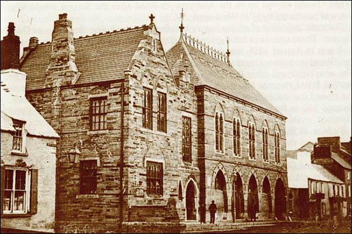
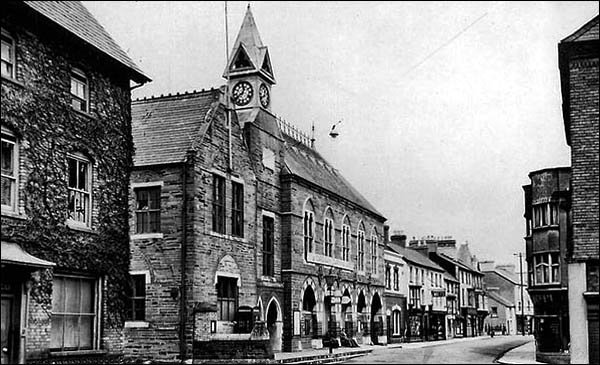

1840

The Beginning
This is an image of the Guildhall back in 1840 though it wasn't exactly a market yet, it was still a hotspot for the people of Cardigan.
1857

Cannon Backstory
The cannon is believed to have been captured from Russian forces during the Battle of Balaclava which is famous for the charge of the Light Brigade. The relic of the cannon was presented to the town in 1857 as a memorial for the poor soldiers who served and passed away during the Crimean War. This cannon is sometimes reffered to as the 'Balaclava Cannon' for this reason.
1860
Grande Opening
The first offcial openning of the Cardigan Guildhall Market, not just the Guildhall but the official Market.
1892

Clock Tower Founded
Clocktower finished it's construction as part of the Guildhall design which still stands here to this day.
Today, the Guildhall Market is established as a cultural landmark in Cardigan